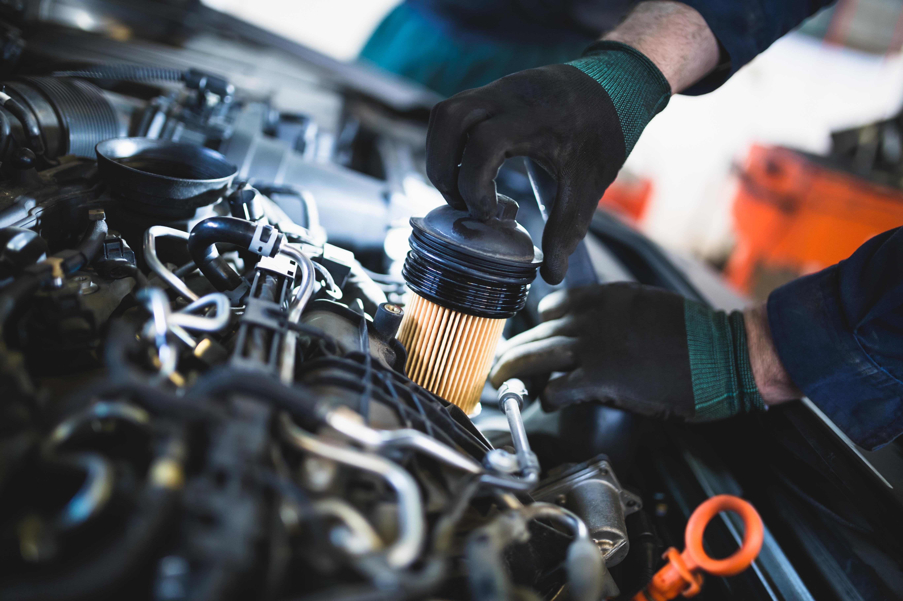

Не водите машину быстрее, чем летает Ваш ангел-хранитель.
Добро пожаловать!В интернет-магазин автозапчастей Донецк, ДНР - VROOMPARTS (´▽`ʃ♡ƪ)
Мы трудимся в дежурном режиме (выдача товара + 1 менеджер).
ПН-ПТ с 9 до 17:00. В субботу - до 14:30. Перед выездом за товаром, обязательно уточняйте статус заказа в личном кабинете на сайте или у менеджера.
* В первую очередь обрабатываются заявки от Клиентов, приехавших на офис, далее - запросы с сайта, телефона и мессенджеров: пожалуйста, наберитесь терпения если ожидание ответа затянулось. Благодарим за понимание.Контакты дежурного менеджера: ICQ, WhatsApp, Telegram, Феникс +7 (949) 312-92-99.
 Тормозные колодки
Тормозные колодки
Тормозные колодки
Тормозная колодка представляет собой элемент тормозной системы, взаимодействующий с тормозной частью тормозного диска.
Такое взаимодействие происходит благодаря нажатию, в результате которого автомобиль снижает скорость.

Масляной фильтр
Масляной фильтр
Масляный фильтр используется, практически во все агрегатах, оснащающихся системой смазки с нагнетателем.
Масляных фильтров существует несколько видов, каждый из которых рассмотрен подробно в статье.
 Свеча зажигания
Свеча зажигания
Свеча зажигания
Топливо-воздушная смесь в камере сгорания бензинового двигателя не загорается сама – ему нужна искра.
Этим и занимается свеча зажигания
Шины
Шины
Рисунок протектора и резиновая смесь предназначены для обеспечения оптимальной тяги, что позволяет автомобилю эффективно сцепляться с поверхностью дороги.
Генератор
Генератор
Автомобильный генератор — устройство, которое преобразует механическую энергию в электрическую.